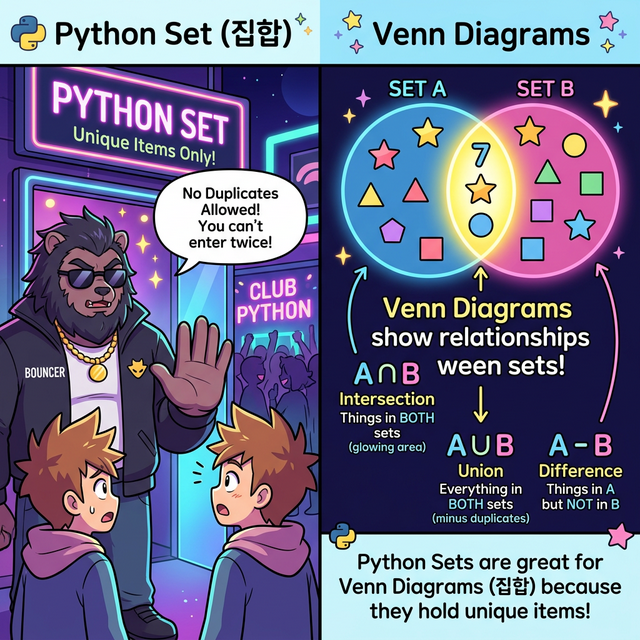
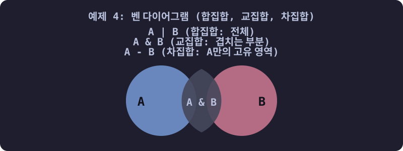

3.4.4 파이썬 세트 (Set) 완벽 가이드
학습목표
본 장에서는 투입된 순서와는 아무런 상관 없이 오로지 고유한 본질 데이터만 담아두어 100% 중복 유입을 철폐해 버리는 ‘집합(Set)’의 아주 독특한 물리 구조를 학습합니다. 무수한 두 데이터 집단 간에 공통점(교집합)이나 차이점(차집합)을 도출하는 벤 다이어그램 수준의 수학적 연산을 파이썬 코드로 어떻게 짧고 간결하게 부르는지 익힙니다.
💡 TL;DR (1분 핵심 요약): 세트(Set)가 대체 뭔가요?
복잡한 설명에 앞서, “세트 = 중복을 허락하지 않는 주머니” 라고 딱 하나만 기억하시면 됩니다!
- 생김새: 딕셔너리와 똑같이 중괄호
{}를 쓰지만,키: 값쌍이 아니라 그냥 값들만 쉼표로 나열합니다. 예:{1, 2, 3} - 차이점: 같은 숫자를 100번 밀어 넣어도, 세트 안에는 오직 1개만 남습니다. (자동 중복 제거기)
- 사용 이유: 수만 개의 데이터 중에서 “종류가 몇 개야?”, “겹치는 게 뭐야?”를 1초 만에 찾아내는 강력한 수학적 벤 다이어그램 연산(교집합, 합집합)이 필요할 때 씁니다. 순서(인덱스)가 없기 때문에 속도가 미친 듯이 빠릅니다.
1. 세트(Set)의 정체와 클럽 기도(Bouncer) 비유
수만 건의 난잡한 고객 ID 데이터나 중구난방 로그 기록을 엑셀로 마주했을 때, 그 방대함 속에서 오직 “딱 한 번이라도 방문한 적이 있는 유니크(Unique)한 유저 리스트”를 뽑아내려 할 때 이 Set이 단연코 가장 위력적인 원픽 무기가 됩니다.

(웹툰 비유: 왼쪽 그림의 신비한 나이트클럽 기도(Python Set)는 문 앞에서 중복된 클론(Clone) 손님들을 철저하게 거부하며 “No Duplicates Allowed!”를 외칩니다. 오직 세상에서 유일한 유니크(Unique)한 사람만 입장할 수 있습니다. 오른쪽 그림은 그들이 모여서 어떻게 합쳐지고(합집합, Union) 겹치는지(교집합, Intersection)를 나타내는 빛나는 벤 다이어그램입니다.)2. 세트의 기본 형태와 생성 규칙
- 기본 형태:
{item1, item2, item3} - 🚨 [주의!] 빈 세트 만들기:
empty_set = {}라고 쓰면 파이썬은 무조건 빈 딕셔너리로 착각합니다! 빈 세트를 만들 때는 반드시set()이라는 내장 함수를 써야 합니다. - 순서 파괴: 세트는 인덱스 번호(
[0])라는 개념이 아예 존재하지 않습니다. 주머니 속에 구슬을 마구잡이로 집어넣는 것과 같아서, 넣은 순서대로 꺼낼 수 있다는 보장이 1%도 없습니다.
3. 세트 실전 조작법 (10선 예제)
예제 1: 중복을 파괴하는 세트 소환 (자동 필터링)
리스트에 똑같은 숫자를 잔뜩 넣고 이를 세트로 묶어버리면 놀라운 일이 벌어집니다.

# 1, 2는 한 번씩, 3은 무려 세 번이나 넣었습니다!
my_list = [1, 2, 3, 3, 3]
# 기적의 중복 제거: 리스트를 세트(Set) 용광로에 던져 넣습니다.
my_set = set(my_list)
# 중복된 3은 모두 소멸하고 유일한 객체들만 남았습니다.
print(my_set) # {1, 2, 3}
예제 2: 원소의 빠른 추가(add)와 삭제(remove)
세트 자체는 딕셔너리처럼 마음껏 주머니에 데이터를 추가하거나 뺄 수 있습니다.

basket = {'apple', 'orange'}
# 1. 새 과일 추가하기
basket.add('banana')
print(basket) # {'apple', 'banana', 'orange'} (순서는 지멋대로 나옵니다)
# 2. 과일 꺼내서 버리기
basket.remove('apple')
print(basket) # {'banana', 'orange'}
예제 3: 세트에 리스트를 넣을 수 있을까? (TypeError)
세트는 열쇠(Key)처럼 동작하므로, 내용물이 변할 위험이 있는 리스트([])는 세트 주머니 안에 절대로 담을 수 없습니다. (에러 발생)
myset = {0}
# myset.add([1, 2]) # 🚨 주석 해제 시 TypeError 폭발! (리스트는 넣을 수 없음)
# 하지만 영원히 변하지 않는 '튜플'은 세트 안에 잘 들어갑니다!
myset.add((1, 2))
print(myset) # {0, (1, 2)}
예제 4: 벤 다이어그램 연산 1 (수학 기호의 향연)
세트를 쓰는 가장 큰 이유입니다. 복잡하고 구질구질하게 중계를 짜넣는 이중 for 루프문 작성은 깔끔하게 포기하고, 단 한 글자의 기호로 수학 연산을 뚝딱 해냅니다.

A = {1, 2, 3, 4}
B = {3, 4, 5, 6, 7}
# 1. 합집합 (Union) | 기호 (A와 B를 모두 합치되 중복은 제거)
print(A | B) # {1, 2, 3, 4, 5, 6, 7}
# 2. 교집합 (Intersection) & 기호 (A와 B에 모두 있는 공통점만)
print(A & B) # {3, 4}
# 3. 차집합 (Difference) - 기호 (A에서 B와 겹치는 걸 뺀 순수 A)
print(A - B) # {1, 2}
예제 5: 벤 다이어그램 연산 2 (메서드 방식)
기호 대신 영어 단어 메서드를 써서 똑같이 동작하게 만들 수도 있습니다. 코드가 길어지지만 다른 사람이 읽기에는 훨씬 직관적입니다.
A = {1, 2, 3, 4}
B = {3, 4, 5, 6, 7}
print(A.union(B)) # 합집합 -> {1, 2, 3, 4, 5, 6, 7}
print(A.intersection(B)) # 교집합 -> {3, 4}
print(A.difference(B)) # 차집합 -> {1, 2}
# 대칭 차집합 (교집합의 반대! A와 B 중 겹치지 않는 것들만 모음)
print(A.symmetric_difference(B)) # {1, 2, 5, 6, 7}
예제 6: 빛보다 빠른 포함 여부 검사 (in 연산자)
만약 리스트에 데이터가 100만 개 있다면, 1000이 있는지 검사할 때 1번부터 끝까지 빙글빙글 찾아봐야 합니다. 하지만 세트는 해시(Hash) 알고리즘을 써서 100만 개든 1억 개든 단 1초(O(1)) 만에 찾아냅니다.
basket = {'apple', 'orange', 'pear'}
# 마법의 in 연산자: 바구니 안에 'apple'이 있니?
if 'apple' in basket:
print("사과가 있습니다!") # 이 탐색 속도가 리스트보다 압도적으로 빠릅니다.
예제 7: 통째로 삼켜 병합하기 (update)
여러 개의 데이터를 한 번에 세트 안에 들이부을 때 씁니다. 중복된 건 알아서 타서 사라집니다.
s = {1, 2, 3}
# 여러 개의 데이터를 리스트로 묶어서 와르르 쏟아 붓습니다.
s.update([3, 4, 5])
print(s) # {1, 2, 3, 4, 5} (3은 중복이라 1개만 남음)
예제 8: 안전하게 삭제하기 (discard vs remove)
remove는 없는 데이터를 지우라고 하면 에러(KeyError)를 뿜으며 뻗어버립니다. 이때 discard를 쓰면 “없으면 말고~” 넘어가 주는 부드러운 삭제가 가능합니다.
s = {1, 2, 3}
s.discard(2) # 2 번을 삭제합니다 -> {1, 3}
s.discard(99) # 99 번은 원래 없습니다. 에러 없이 평온하게 넘어갑니다!
# s.remove(99) # 🚨 주석 해제 시 KeyError: 99 에러 폭발!
print(s)
예제 9: 무작위 뽑기와 제물 바치기 (pop)
리스트의 pop()은 맨 뒤의 녀석을 끄집어 내지만, 세트는 순서가 아예 없기 때문에 누가 뽑혀 나올지 아무도 모릅니다. 로또 스피너처럼 랜덤으로 하나가 사라집니다.
s = {'사과', '바나나', '포도'}
sacrificed = s.pop() # 누군가 하나 랜덤으로 추출되어 사라집니다!
print("희생양:", sacrificed)
print("남은 세트:", s)
예제 10: 흔적도 없이 초기화하기 (clear)
세트 안의 내용물을 핵폭탄으로 날려 빈 깡통으로 만듭니다.
s = {1, 2, 3}
s.clear()
print(s) # set() 이라는 출력 문구가 뜨며 완전히 깨끗해집니다.
☕ Java vs 🐍 Python 스나이퍼 비교
1. 세트 생성의 간결함
- Java: 중복 없는 집합을 쓰려면 끔찍하게 긴 코드가 필요합니다.
Set<Integer> set = new HashSet<>(); set.add(1); set.add(2); - Python: 단 1줄이면 끝납니다.
s = {1, 2}
2. 무적의 집합 연산자 기호 (&, |, -)
- Java: 교집합을 구하려면
set1.retainAll(set2)같은 무거운 내장 함수를 호출해서 원본을 훼손하며 힘들게 계산해야 합니다. - Python: 중학교 수학 시간에 배운 직관적인 기호 그대로
A & B,A | B를 치면, 원본은 그대로 보존되면서 빛의 속도로 새로운 교집합 덩어리 결과를 내뱉습니다. 이 우아함 때문에 파이썬이 데이터 과학(Data Science)의 제왕이 되었습니다.
🎧 Vibe Coding
🗣️ 학생 프롬프트 (AI에게 이렇게 명령해 보세요): “파이썬
set을 이용해서 아주 흔한 코딩 테스트 문제를 하나 풀어줘. 카카오톡 유저 명단users = ['민수', '영희', '철수', '민수', '지수', '영희']리스트가 있어. 이 리스트에서 파이썬의set()을 써서 중복된 이름을 0.1초 만에 날려버린 새로운 세트를 만들고, 다시 이 세트를 리스트로 바꾼 다음에len()함수를 써서 ‘순수하게 접속한 고유 유저의 명 수’가 총 몇 명인지 콘솔창에 출력하는 짧은 코드를 짜줘.”
코딩 영단어 학습 📝
- Set: 집합, 세트. (수학시간에 배우는 그 집합과 정확히 일치합니다. 햄버거 세트 메뉴처럼 무언가를 한데 모아둔 주머니를 뜻하지만, 똑같은 감자튀김 코인을 100개 넣어도 주머니 안에는 1개만 남는 신비한 특성이 있습니다.)
- Unique: 유일무이한, 독특한. (세트의 최강점이 바로 모든 데이터를 Unique하게 강제 제련해 줍니다. 아이디, 사번, 주민번호 등 데이터베이스에서 절대 겹치면 안 되는 성질을 뜻합니다.)
- Intersection / Union: 교차로, 교집합 / 결합, 합집합. (도로 2개가 만나는 교차로를 Intersection이라고 부르듯, A집합과 B집합이 만나는 지점이 교집합입니다.)
- Discard: (불필요한 것을) 버리다, 폐기하다. (카드를 하다가 맘에 안 드는 패를 버릴 때 쓰는 단어입니다.
remove가 강압적이고 거친 삭제라면,discard는 없으면 그만이라는 식으로 부드럽게 쓰레기통에 놓는 느낌의 삭제 메서드입니다.)